← Index · ← Previous · Next →
Authors: Thomas Muhren, Roberto Benzi, Mauro Sbragaglia, Jeannot Trampert, Federico Toschi
Type: theory · Category: statistical mechanics · PDF: https://arxiv.org/pdf/2609.24462v1
Analysis basis: full PDF text, analyzed in chunks
Topic relevance: non-equilibrium universality 3/5 · Frenkel-Kontorova 1/5 · Keldysh / 2PI / non-Gaussian methods 1/5 · correlated / nonlocal dissipation 1/5 · driven-dissipative phase transition 1/5 · methods for driven-dissipative 1/5
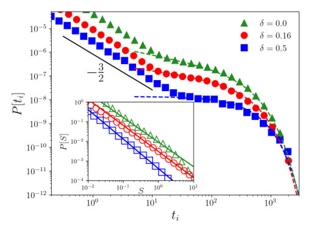
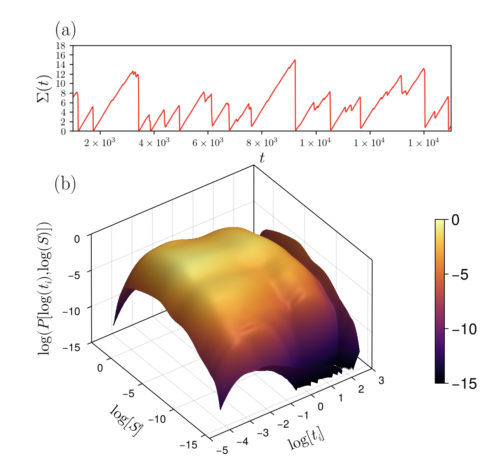
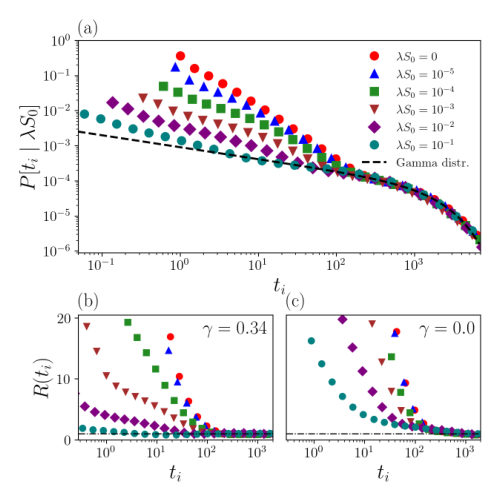
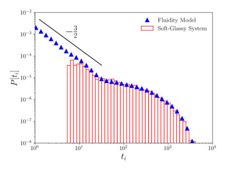
Summary. This theoretical paper analyzes the statistical mechanics of avalanches in amorphous materials using a field-theoretic model. It determines that both avalanche sizes and interevent times exhibit power-law scaling, and crucially, it derives a precise mathematical relationship connecting their respective scaling exponents. The work provides analytical predictions that successfully match numerical simulations of soft-glassy systems.
Why it may be interesting. The rigorous mathematical derivation of scaling relations between two distinct statistical measures ($S$ and $t_i$) in a non-equilibrium, disordered system provides a powerful theoretical framework applicable to many complex physical processes.
Main problem. The paper investigates the statistical properties of avalanches (size $S$ and interevent time $t_i$) in amorphous systems, with a specific focus on characterizing the interevent time statistics.
Main result. Both avalanche sizes and interevent times are found to follow power-law distributions, and their respective scaling exponents satisfy a precise theoretical relationship ($\gamma = 3 - 2\alpha$).
Method. The study employs a field theoretical model of a soft-glassy system under shear, deriving scaling laws by analyzing the evolution of the fluidity order parameter $\phi$ and its associated probability distributions.
Model / system. The system is a soft-glassy amorphous material modeled by coupled, nonlinear partial differential equations describing stress ($\Sigma$) and fluidity ($\phi$). The analysis utilizes simplified, space-independent versions of these equations.
Key observables. Avalanche size distribution $P[S] \sim S^{-5/4+\delta/2}$ and interevent time distribution $P[t_i]$, along with the correlation coefficient $r$ between $S$ and $t_i$.
Important parameters / regimes. The scaling exponent $\delta$ is a crucial parameter controlling the exponents for both $S$ and $t_i$; the critical value $\delta = 1/2$ is highlighted.
Assumptions / limitations. The analysis relies on significant simplifications, including assuming constant stress rate ($\dot{\Gamma} = 0.01$) and using approximations like the Self-Consistent Field Approximation (Hartree method) to solve the dynamics.
Figures summary. Figures illustrate the stress evolution showing stress drops (avalanches), the joint probability density of $t_i$ and $S$, and the collapse of the conditional interevent time distribution $P[t_i|\lambda S_0]$ onto a Gamma distribution.
Paper structure. The paper progresses from defining the full dynamical model (stress and fluidity) to simplifying it into solvable forms. It then derives the power-law scaling for $P[S]$ and $P[t_i]$ separately, establishes the relationship between their exponents, and discusses the implications of the critical parameter $\delta$.
The intermittent, stick-slip flow of amorphous systems is characterized by avalanches whose statistical properties display robust power-laws. In this paper, we study avalanche statistics in a field theoretical model of a soft-glassy system under shear. The order parameter in our model is the fluidity, which is related to the local rate of plastic events in a soft-glass. While avalanche sizes $S$ have been extensively characterized, the statistics of interevent times $t_i$ have remained largely unexplored. Here, we find that both $S$ and $t_i$ are power-law distributed and that their scaling exponents satisfy a precise relation. The model enables the analytical derivation of the scaling exponents and the reproduction of the behavior observed across a wide class of amorphous systems.
Authors: Vladimir V. Malinovsky, Svetlana A. Malinovskaya
Type: theory · Category: other · PDF: https://arxiv.org/pdf/2609.22673v1
Analysis basis: full PDF text, analyzed in chunks
Topic relevance: Rydberg arrays 3/5 · analog quantum simulation 3/5 · methods for driven-dissipative 2/5
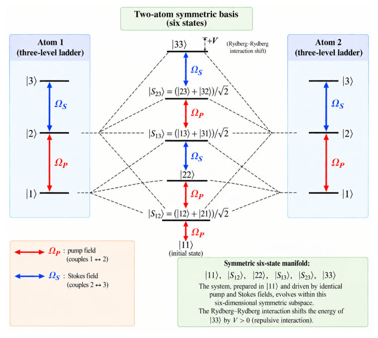
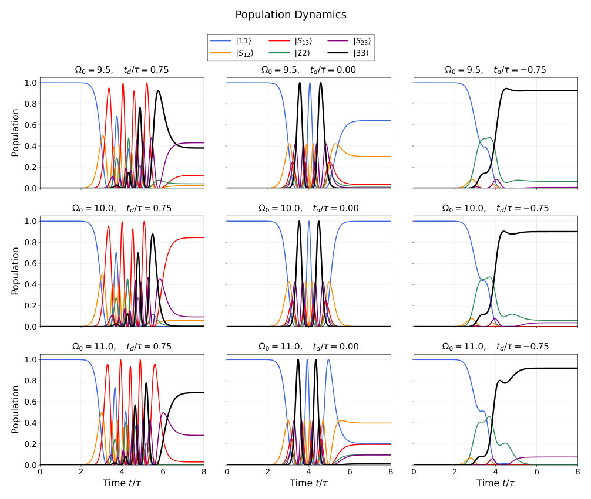
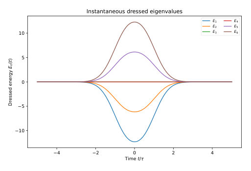
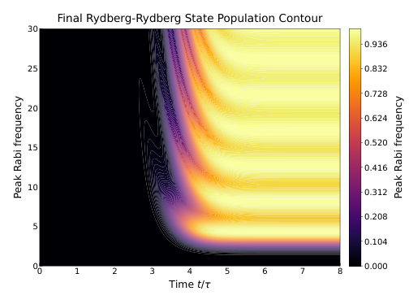
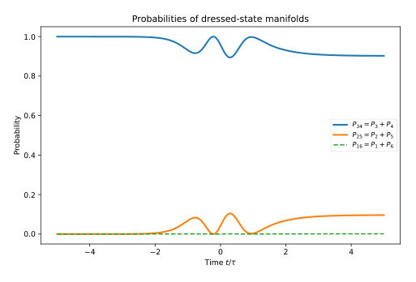
Summary. This paper analyzes collective STIRAP in interacting pairs of three-level atoms, revealing that the dynamics are governed by coupled dressed manifolds rather than a single dark state. The authors develop a framework showing that while Rydberg-Rydberg interactions shift the resonance, applying a specific frequency chirp can compensate this shift, thereby restoring efficient population transfer and enabling controlled quantum gate operations.
Why it may be interesting. This work provides a sophisticated, manifold-based control scheme for interacting quantum systems, showing how tailored driving fields (chirps) can counteract intrinsic interactions to maintain coherent quantum operations like STIRAP.
Main problem. The paper investigates collective chirped STIRAP in interacting three-level atoms, focusing on understanding dynamics beyond simple dark-state following and compensating for Rydberg-Rydberg interaction-induced detuning.
Main result. The dynamics are governed by coherent evolution within coupled dressed manifolds, and efficient population transfer can be restored by applying a precisely calculated frequency chirp that compensates the interaction-induced energy shift.
Method. The authors use numerical simulations combined with a theoretical dressed-manifold description, projecting the full Hamiltonian onto gauge-invariant subspaces to analyze the coupled dynamics.
Model / system. The system is a pair of identical three-level ladder-type atoms, modeled by a symmetric six-state subspace. The Hamiltonian includes driving fields (Rabi frequencies) and a repulsive Rydberg-Rydberg interaction term ($V_{RR}$) shifting the doubly excited state.
Key observables. Population transfer to the doubly excited Rydberg state ($P_{33}(t)$), and the oscillatory dependence of this transfer on the peak Rabi frequency.
Important parameters / regimes. The interaction strength ($V_{RR}$), the chirp rate ($\alpha$), and the pulse timing relative to the interaction-induced resonance condition.
Assumptions / limitations. The analysis relies on the rotating-wave approximation and the electric-dipole approximation, assuming the dressed-manifold structure remains robust despite the interaction shift.
Figures summary. Figures illustrate the time evolution of populations, showing suppression of transfer with interaction (zero chirp) and restoration of transfer with the analytically derived chirp.
Paper structure. The paper progresses from setting up the microscopic Hamiltonian for the two-atom system to deriving the effective Hamiltonian in the symmetric subspace. It then develops the dressed-manifold picture to explain the oscillatory dynamics, culminating in the analytical derivation and numerical verification of the chirp required to counteract the interaction-induced detuning.
We investigate collective chirped stimulated Raman adiabatic passage (STIRAP) in a pair of identical three-level atoms using a symmetric six-state model. Numerical simulations reveal a pronounced oscillatory dependence of the population transfer to the doubly excited Rydberg state on the peak Rabi frequency, indicating dynamics beyond the conventional single-dark-state description of STIRAP. To identify the underlying mechanism, we develop a dressed-manifold description based on gauge-invariant projections onto nearly degenerate instantaneous dressed manifolds. The analysis demonstrates that the wavefunction remains predominantly confined to a two-dimensional dark manifold while becoming transiently coupled to a neighboring bright manifold during the pulse-overlap interval. We further show that in the dressed-manifold representation, the Rydberg-Rydberg interaction modifies the collective resonance structure while preserving the dark-bright manifold dynamics responsible for the oscillatory transfer; an appropriately chosen frequency chirp compensates the interaction-induced detuning and restores efficient population transfer. This dressed-manifold picture provides a consistent interpretation of oscillatory collective transfer and establishes a framework for controlling adiabatic dynamics in interacting multilevel systems by linearly chirped STIRAP, opening a route toward manifold-based control of Rydberg-mediated quantum gates, correlated-state preparation, and other coherent operations in interacting atomic systems.
Authors: Laurent Hébert-Dufresne, Aanjaneya Kumar, S. Redner
Type: theory · Category: statistical mechanics · PDF: https://arxiv.org/pdf/2609.22541v1
Analysis basis: full PDF text, analyzed in chunks
Topic relevance: driven-dissipative phase transition 3/5 · non-equilibrium universality 3/5 · Frenkel-Kontorova 1/5 · methods for driven-dissipative 1/5
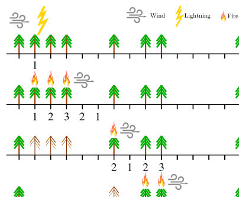
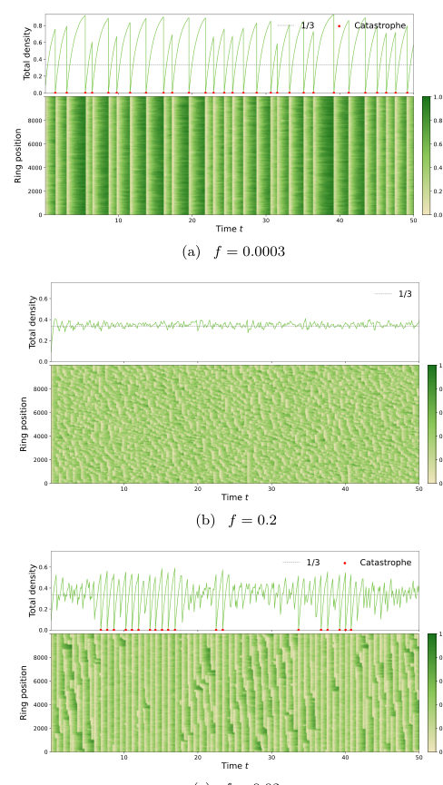
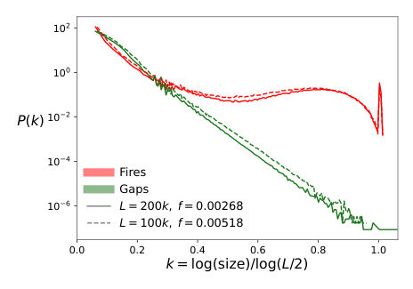
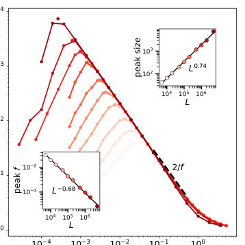
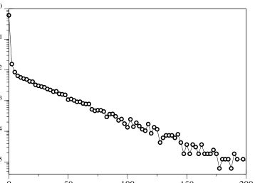
Summary. This paper models wind-driven forest fires in 1D, revealing three distinct dynamical regimes governed by lightning frequency. It demonstrates that the intermediate regime exhibits intermittency, characterized by alternating periods of stable growth and chaotic, catastrophic events. The work provides quantitative scaling laws for fire sizes and gap distributions in this complex non-equilibrium system.
Why it may be interesting. The study of intermittency and the transition between different dynamical regimes (deterministic vs. chaotic) in a non-equilibrium system is highly relevant to understanding complex, self-organizing phenomena in physics, analogous to pattern formation or driven many-body systems.
Main problem. The paper investigates the complex dynamics, particularly intermittency, in a one-dimensional model of wind-driven forest fires.
Main result. The model exhibits three distinct regimes controlled by the lightning rate, showing power-law scaling for gap sizes and evidence of coexisting deterministic and chaotic dynamics in the intermittent regime.
Method. The dynamics are analyzed by constructing a 1D forest-fire model and studying the time evolution of tree density and fire propagation under varying rates of tree growth and lightning strikes.
Model / system. The system is a 1D periodic ring representing a forest, where sites can be empty or occupied by a tree. Fire propagation is governed by an intensity mechanism that increases within a forest and decreases when jumping gaps. The dynamics are driven by tree growth (rate r) and random lightning strikes (rate f).
Key observables. Tree density $ ho(t)$, fire and gap size distributions, time interval distribution $Q(\Delta t)$ between catastrophes, and characteristic fire sizes.
Important parameters / regimes. Tree growth rate ($r$), lightning strike rate ($f$), and the system length ($L$). Key regimes are defined by the relative magnitudes of $f$ compared to $r/L$ and $L^{-\mu}$.
Assumptions / limitations. The model is treated as one-dimensional and periodic. The analysis relies on identifying distinct dynamical regimes based on the frequency of external forcing (lightning).
Figures summary. Figures illustrate the time evolution of tree density across the three regimes (quasi-deterministic, steady state, intermittent). They also show the distribution of fire sizes and the probability distribution of time intervals between major fire events.
Paper structure. The paper analyzes the system across three regimes defined by the lightning rate $f$: quasi-deterministic (rare lightning), steady state (frequent lightning), and the intermediate intermittent regime. The analysis focuses on characterizing the scaling laws and underlying dynamics in each regime.
We construct a wind-driven forest-fire model in one dimension in which a fire can jump gaps between trees to ignite disjoint downwind forests. The size of a gap that a fire can jump depends on the fire intensity, which increases as the fire propagates through trees and diminishes as the fire jumps gaps. Trees grow on empty sites at rate $r$ and lightning strikes each site with rate $f$. When $f\ll r/L$, where $L$ is the system length, lightning is sufficiently rare that quasi-deterministic dynamics arises where all trees are consumed when a lightning-induced fire occurs. For $f\gg L^{-μ}$ with $μ\approx 0.8$, lightning is sufficiently frequent that a steady state is reached, but with unexpected behaviors for the forest- and gap-size distributions. Intermittency arises in between these regimes, with coexisting temporal domains of deterministic and chaotic dynamics.
Authors: Wen Yu Kon, Niccolò Bigagli, Andrew Conrad, Taylor Shields, Fatih Kaleoglu, Ignatius William Primaatmaja, Alexander Craddock, RJ Pisani, Mael Flament, Jude Seeber, Omar Amer, Charles Lim, Xinhua Ling, Rob Otter, Kaushik Chakraborty, Mehdi Namazi
Type: experiment · Category: quantum information and computing · PDF: https://arxiv.org/pdf/2609.23234v1
Analysis basis: full PDF text, analyzed in chunks
Topic relevance: QC/QI experiment 3/5 · quantum optics experiment 3/5 · quantum measurements 2/5
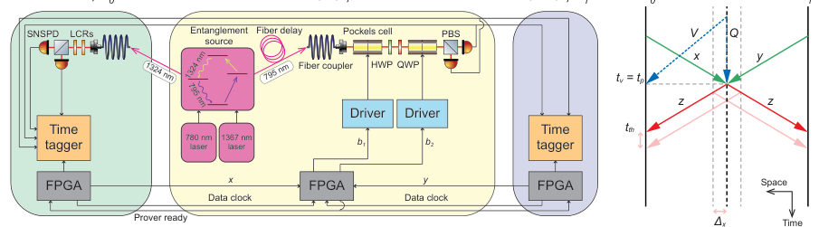
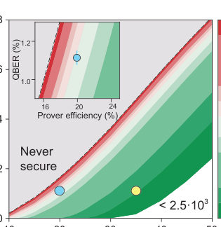
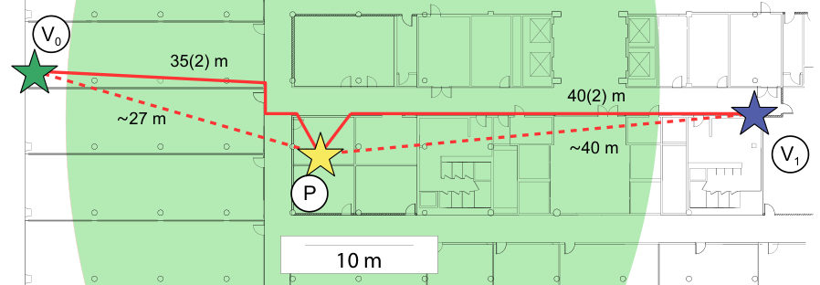
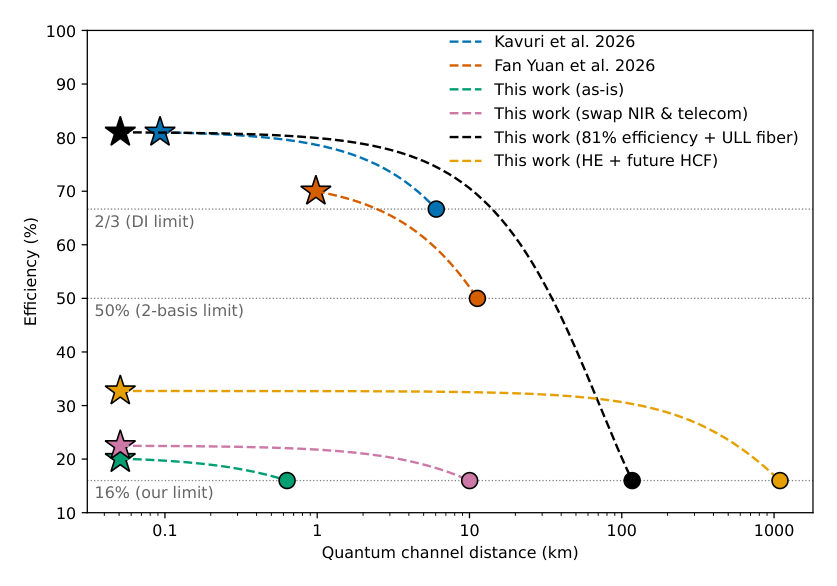
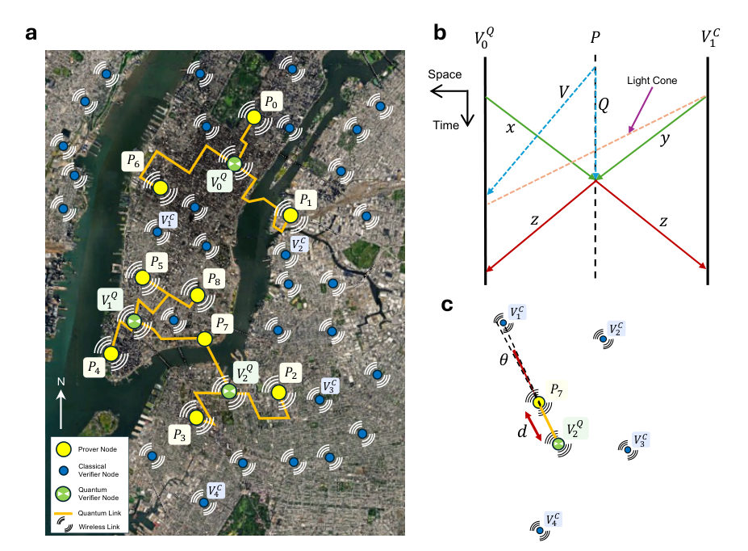
Summary. This paper introduces and experimentally validates a Loss-Tolerant Quantum Position Verification (LT-QPV) protocol designed for metropolitan quantum networks. By shifting entanglement preparation to the prover, the scheme achieves security independent of channel loss. The successful demonstration proves a scalable, physics-backed method for certifying spacetime coordinates for critical applications.
Why it may be interesting. This work directly addresses the practical implementation of quantum security primitives for networking, which is a key area bridging fundamental quantum information theory with applied quantum networking hardware.
Main problem. To provide a physically secure 'spacetime seal' guaranteeing that a digital event occurred at an approved location and time, overcoming the spoofability of classical cryptographic methods.
Main result. The authors experimentally demonstrated a Loss-Tolerant Quantum Position Verification (LT-QPV) protocol that certifies position using commercially available hardware, achieving high security independent of channel loss.
Method. The protocol uses quantum entanglement and exploits principles like the no-cloning theorem, requiring the untrusted prover to prepare and distribute entangled qubits to a quantum verifier node.
Model / system. The system involves an untrusted prover (P), a quantum verifier ($V_{Q0}$), and a classical verifier ($V_{C1}$). It utilizes entangled photon pairs transmitted over metropolitan-scale quantum channels.
Key observables. Positional uncertainty (measured in meters), Quantum Bit Error Rate (QBER), and Prover efficiency ($\eta$).
Important parameters / regimes. The security proof is established for finite-size against QPT adversaries in the QROM model; performance was demonstrated with $N \geq 2.55 imes 10^5$ rounds.
Assumptions / limitations. The security proof assumes the verifier possesses a trusted measurement device, and the full loss-tolerance claim relies on classical and quantum communication traveling at the speed of light.
Figures summary. Figures illustrate the experimental setup (P, $V_{Q0}$, $V_{C1}$), the spacetime diagram of the protocol, and performance metrics like QBER and efficiency compared to other QPV schemes.
Paper structure. The paper introduces the need for spacetime sealing, details the LT-QPV protocol, presents the security proof in the QROM, and concludes with experimental demonstrations of position certification and latency budgeting.
A spacetime seal, a cryptographic guarantee that a digital event has occurred at an approved location and time, can augment a digital signature with location attestation for legal, financial, and regulatory use cases. In adversarial settings any purely classical realization of such a seal can be spoofed. Quantum position verification (QPV) offers a physics-based solution, exploiting the no-cloning theorem and the no-signaling principle to certify a party's spacetime coordinates. While the feasibility of QPV has been recently shown via entanglement- and coherent light-based protocols, achieving loss tolerance for these schemes substantially increases implementation complexity at metropolitan scales. Here, we introduce and experimentally demonstrate a loss-tolerant QPV (LT-QPV) protocol whose security is independent of channel loss. We prove finite-size security against quantum polynomial-time entangled adversaries in the quantum random oracle model instantiated with cryptographically secure hash functions. Implemented entirely with commercial off-the-shelf components, our system certifies position within 22 minutes of net data collection time against a restricted adversary, with a clear path to real-time certification (<1s) with upgraded hardware. Our architecture, requiring only a single quantum verifier node alongside classical infrastructure, is naturally compatible with metropolitan-area quantum networks, establishing the foundations for scalable, physics-backed spacetime certification as a deployable service.
Authors: Shan Zeng, Bing Lin, Ali Omar
Type: theory · Category: quantum information and computing · PDF: https://arxiv.org/pdf/2609.23057v1
Analysis basis: full PDF text, analyzed in chunks
Topic relevance: methods for driven-dissipative 3/5 · analog quantum simulation 2/5 · interference shaping light 1/5 · quantum measurements 1/5
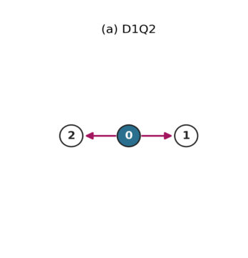
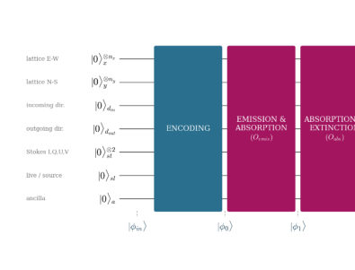
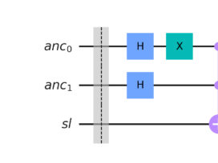
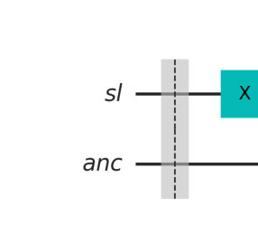
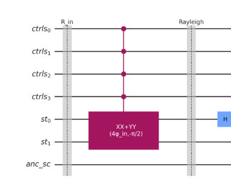
Summary. This paper proposes a quantum-inspired framework to simulate polarized radiative transfer in the atmosphere using a lattice Boltzmann approach. By mapping physical processes like scattering and absorption into quantum operators, the authors demonstrate that the quantum circuit accurately reproduces classical simulation results. This establishes a crucial benchmark for future quantum climate and atmospheric modeling.
Why it may be interesting. This work provides a concrete, physics-based blueprint for mapping a complex, continuous wave propagation problem (RTE) onto a discrete quantum circuit structure, which is highly relevant for quantum simulation of open quantum systems.
Main problem. The paper addresses the challenge of simulating polarized radiative transfer in the atmosphere, which requires jointly modeling multiple scattering, absorption, and emission processes.
Main result. The authors successfully demonstrated that the full physics of polarized radiative transfer can be embedded within a quantum lattice framework, with quantum and classical results agreeing to high precision.
Method. They developed a quantum-inspired approach based on the Lattice Boltzmann Method, mapping the physical processes (emission, scattering, absorption) into sequences of quantum operators implemented on a quantum simulator.
Model / system. The system is the Earth's atmosphere, modeled using the Stokes vector to track polarization. The simulation uses a D2Q9 lattice stencil and is implemented via quantum circuits on the IBM Qiskit simulator.
Key observables. Stokes vector components (I, Q, U, V), Degree of Polarization (DOP), and the absolute/relative differences between quantum and classical solutions.
Important parameters / regimes. The simulation uses a D2Q9 stencil, and the resource scaling shows qubit requirements grow significantly with the number of time steps.
Assumptions / limitations. The primary assumptions involve discretizing the continuous physical domain onto a lattice and approximating complex physical interactions (like scattering) using quantum operators.
Figures summary. Figures illustrate the D1Q2 and D2Q9 lattice schematics, the quantum radiative transfer coding structure, and show comparisons of intensity, polarization, and DOP time series between quantum and classical solvers.
Paper structure. The paper first introduces the physical problem and the quantum-inspired LBM framework. It then details the mapping of physical processes (Emission, Scattering, Absorption) into quantum operators. Finally, it presents extensive comparisons between the quantum and classical solvers across various spatial, temporal, and angular configurations.
A quantum inspired framework was developed for polarized radiative transfer in the atmosphere to jointly model multiple scattering, absorption, and emission processes. The radiative field is represented by the Stokes vector and discretized using an n-directional two-dimensional spatial lattice on 3-dimensional uniformly distributed zenith and azimuth angular vectors. The formulation of this quantum computation system is based on the Lattice Boltzmann Method, which incorporates a physics-based polarized phase matrix. A classical lattice solver employing identical spatial and angular discretization and physical modeling as in quantum algorithm is implemented. The corresponding quantum algorithm is evaluated using the IBM Qiskit quantum simulator, enabling direct comparison of numerical accuracy to a classical simulation reference. The results demonstrate that fully physics-based polarized radiative transfer can be embedded within a quantum lattice framework, which provides an initial benchmark toward scalable quantum atmospheric radiative transfer and future quantum climate modeling
Authors: J. Sumaya-Martinez
Type: theory · Category: quantum information and computing · PDF: https://arxiv.org/pdf/2609.23914v1
Analysis basis: full PDF text, analyzed in chunks
Topic relevance: quantum measurements 3/5 · quantum optics experiment 3/5 · interference shaping light 1/5
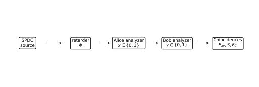
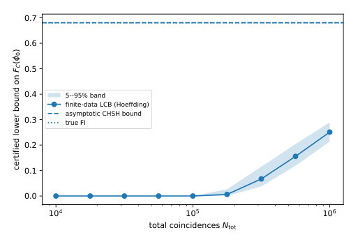
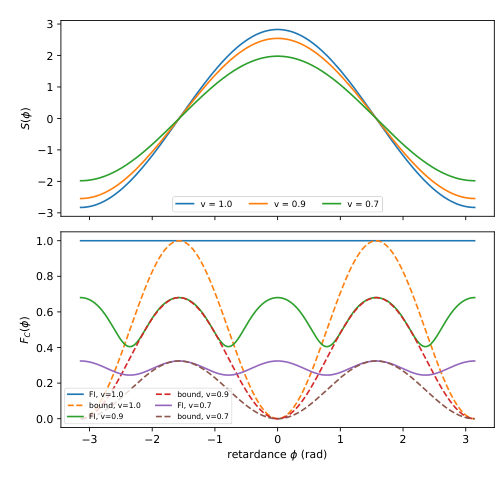
Summary. This paper shows that the coincidence measurements used to test quantum nonlocality via CHSH inequalities can simultaneously provide a quantitative measure of sensitivity for estimating an unknown phase shift (retardance). By deriving the Fisher Information directly from these correlators, the authors establish a robust, data-driven certificate for quantum polarimetry using standard Bell-test setups.
Why it may be interesting. It bridges two distinct areas of quantum physics—nonlocality testing (Bell tests) and quantum metrology—by showing that the data set for one can quantify the sensitivity for the other, which is highly relevant for experimental quantum optics.
Main problem. To demonstrate that coincidence data collected during a Bell test can serve as a quantitative metrological certificate for estimating a local birefringent phase (retardance polarimetry).
Main result. The CHSH data provides a rigorous lower bound on retardance sensitivity, which is useful even when the Bell inequality is not violated. This shows that Bell violation and metrological usefulness are distinct resources.
Method. The authors derive the classical Fisher Information directly from experimentally accessible CHSH correlators and establish a lower bound relating this FI to the derivative of the CHSH parameter.
Model / system. The system involves polarization-entangled photons generated via SPDC, where one photon undergoes a local birefringent phase encoding. The analysis uses a two-outcome measurement model based on CHSH correlators.
Key observables. CHSH correlators ($E_{xy}$), the CHSH parameter ($S$), and the derived Classical Fisher Information ($F_C$).
Important parameters / regimes. The phase shift ($\phi$), visibility ($v$), and the degree of Bell violation.
Assumptions / limitations. The certification assumes unbiased single-party marginals and relies on the measurement settings being trusted (semi-device-independent).
Figures summary. Figure 1 conceptually links the CHSH correlators, the Bell parameter, and the Fisher Information. Figure 2 shows how the FI bound behaves under visibility loss, and Figure 3 illustrates the finite-data confidence bound approaching the asymptotic limit.
Paper structure. The paper develops the theoretical framework by deriving the FI bound from CHSH correlators, provides mathematical appendices detailing the derivations (e.g., using Cauchy-Schwarz), and concludes by discussing the practical implications for quantum polarimetry.
Bell-CHSH measurements with polarization-entangled photons are commonly used as nonlocality witnesses. Here we show that the same coincidence data can also provide a quantitative metrological certificate for optical retardance sensing. For a local birefringent phase encoded on one photon, we derive the classical Fisher information directly from experimentally accessible CHSH correlators and obtain a lower bound expressed in terms of the measured correlations and the phase derivative of the CHSH parameter. In the unbiased-marginal two-qubit regime, the canonical CHSH analyzer settings are shown to be simultaneously Bell-optimal and Fisher-optimal, saturating the quantum Fisher information for retardance estimation in the ideal case. We further analyze reduced visibility, phase noise, analyzer misalignment, and finite coincidence counts, and construct conservative lower confidence bounds that can be evaluated without quantum-state tomography. The results also clarify that Bell violation and metrological usefulness are distinct resources: nonzero Fisher information can persist below the CHSH-violation threshold. The protocol therefore enables a standard Bell-test data set to provide both a nonlocality benchmark and a statistically controlled sensitivity certificate for quantum polarimetry.
Authors: Leonardo Zambrano, Luciano Pereira, Antonio Acín
Type: theory · Category: strongly correlated electrons · PDF: https://arxiv.org/pdf/2609.24794v1
Analysis basis: full PDF text, analyzed in chunks
Topic relevance: analog quantum simulation 3/5 · Keldysh / 2PI / non-Gaussian methods 2/5 · quantum measurements 2/5
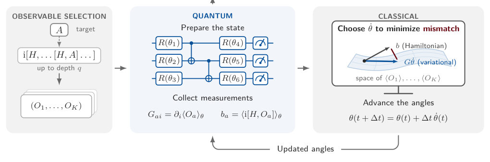
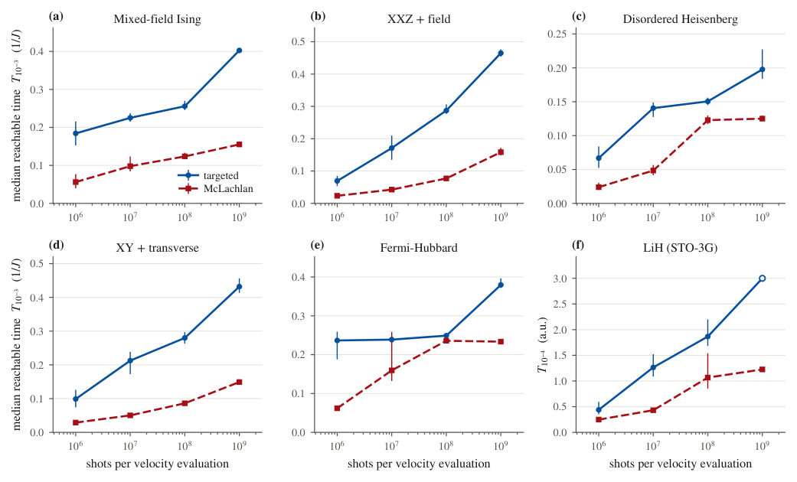
Summary. This paper introduces an observable-targeted variational quantum simulation technique that focuses parameter updates on matching the evolution of specific target observables rather than the entire quantum state. By leveraging an error identity, the method significantly extends the simulation time achievable with limited measurement resources compared to standard approaches. This advancement is particularly valuable for simulating complex strongly correlated electron systems like the Hubbard model.
Why it may be interesting. This work directly improves the resource scaling of quantum simulation algorithms by making the variational optimization process physically informed, which is crucial for simulating complex, strongly correlated materials.
Main problem. The paper addresses the challenge of simulating quantum Hamiltonian dynamics when only the expectation values of a few observables are needed, rather than the full quantum state.
Main result. The proposed observable-targeted variational quantum simulation method extends the median time within the target-error tolerance by up to a factor of 4.2 compared to standard VQS at equal measurement budgets.
Method. It updates variational circuit parameters by minimizing the mismatch in the equations of motion for a selected set of target observables, guided by an exact error identity.
Model / system. The method is benchmarked across several models, including six-qubit spin systems (Ising, XXZ, XY), the Fermi-Hubbard model, and molecular Hamiltonians (LiH).
Key observables. The target observable A, and the set of observables O used to construct the update dictionary (often involving repeated commutators with the Hamiltonian).
Important parameters / regimes. Measurement budgets (shot counts $S$), target error tolerance ($\epsilon$), and the number of parameters ($p$) and dictionary size ($K$).
Assumptions / limitations. The method relies on the assumption that the error can be effectively projected onto the subspace spanned by the target observables, and it uses finite measurement statistics.
Figures summary. Figure 1 illustrates the cycle of the targeted VQS: observables guide selection, the quantum processor measures data, and the classical processor determines parameter velocities to match the target observable dynamics.
Paper structure. The paper develops the theory by contrasting standard VQS (state-level objective) with the proposed observable-targeted approach (seminorm minimization). It details the mathematical formulation using the target error identity and applies the method to various physical models.
Standard variational quantum simulation seeks to reproduce the evolution of the full quantum state, although many applications require only the expectation values of a few observables. We study a variational method for pure-state Hamiltonian dynamics that updates circuit parameters to reproduce the evolution of selected expectation values. An exact error identity guides the choice of observables, motivating a construction based on repeated commutators of the target with the Hamiltonian. For Pauli observables and Pauli-rotation circuits, the update can be estimated without ancillary qubits or controlled operations for overlap estimation. Across six-qubit spin, fermionic, and molecular benchmarks, the targeted update extends the median time within the target-error tolerance by up to a factor of $4.2$ relative to standard variational quantum simulation at equal shot budgets. These results show that directing the variational update toward the target observable can extend accurate simulation without increasing the measurement cost per time step.
Authors: Yang Xiao, Jin Wang
Type: theory · Category: statistical mechanics · PDF: https://arxiv.org/pdf/2609.22831v1
Analysis basis: full PDF text, analyzed in chunks
Topic relevance: quantum measurements 3/5 · Keldysh / 2PI / non-Gaussian methods 2/5 · methods for driven-dissipative 2/5
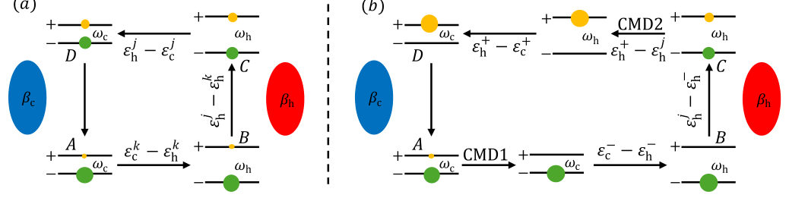
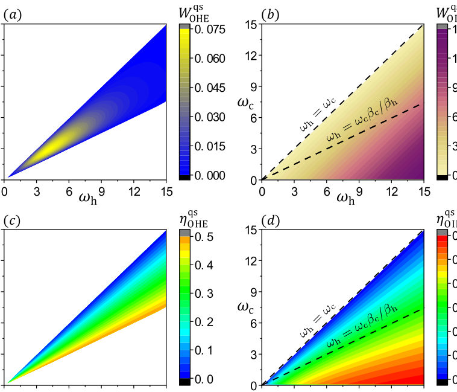
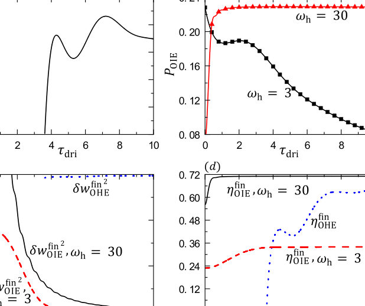
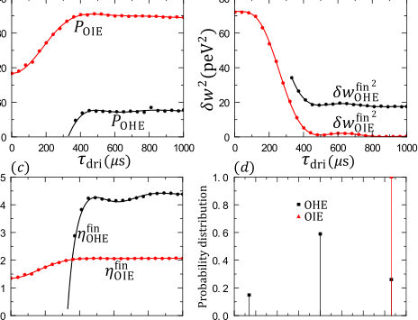
Summary. This paper introduces the Otto Information Engine (OIE), an enhancement to the standard quantum heat engine using continuous Maxwell's demons. The OIE overcomes the limitations of stochastic work output and temperature constraints by ensuring deterministic operation. This allows for the extraction of work with zero fluctuations and potentially exceeding the Carnot efficiency limit.
Why it may be interesting. This work directly addresses fundamental limits in quantum thermodynamics by engineering a mechanism (the OIE) to decouple work output from stochastic thermal fluctuations, which is a key area in non-equilibrium statistical mechanics.
Main problem. Standard quantum heat engines are limited by reservoir temperatures, suffer from stochastic work output, and are bounded by the Carnot efficiency.
Main result. The proposed Otto Information Engine (OIE) achieves zero work fluctuations and can surpass the standard Carnot efficiency, enabling arbitrary work extraction.
Method. The authors analyze the quantum Otto cycle, introducing continuous Maxwell's demons (CMD) and employing counterdiabatic driving techniques to control the system's trajectory deterministically.
Model / system. The model is a quantum Otto cycle implemented with a spin-1/2 working system, enhanced by two continuous Maxwell's demons (CMD1 and CMD2) to form the OIE.
Key observables. Work output ($\langle W angle$), work fluctuations ($\delta w^2$), and efficiency ($\eta$).
Important parameters / regimes. Energy level gaps ($\omega_c, \omega_h$), reservoir temperatures ($T_c, T_h$), and measurement times ($ au_c^M, au_h^M$).
Assumptions / limitations. The OIE relies on the deterministic operation enforced by the CMDs and the use of counterdiabatic Hamiltonians to eliminate quantum transitions.
Figures summary. Figure 5 compares the OHE and OIE performance (power, fluctuations, efficiency) versus driving time, showing the OIE's superior, fluctuation-free operation.
Paper structure. The paper progresses from analyzing the limitations of the standard Otto Heat Engine (OHE) to introducing the OIE via Maxwell's demons, deriving the ideal zero-fluctuation work output, and finally confirming enhanced power and zero fluctuations using Monte Carlo simulations.
Generally, the work output of stochastic heat engines is governed by the stochastic trajectory distribution and the energy spectrum. Because the trajectory distribution depends on the thermal reservoir temperatures, the work output is not only constrained by temperature but is also susceptible to thermal fluctuations. To address these limitations, we introduce two continuous Maxwell's demons into a quantum Otto cycle, forming an Otto information engine (OIE). We demonstrate that the work output of the OIE depends solely on the energy level gap, enabling arbitrary work extraction while eliminating work fluctuations, thereby ensuring cycle-to-cycle identical work output. Furthermore, we show that the engine's efficiency can surpass the standard Carnot efficiency even after accounting for the energy cost of demon's memory erasure. Finally, we show that the OIE can deliver superior output power even when the demon's measurement time is taken into account, and the corresponding Monte Carlo simulation has been executed.
Authors: Yung-Yeh Chang, Chen-Hsuan Hsu
Type: theory · Category: strongly correlated electrons · PDF: https://arxiv.org/pdf/2609.24502v1
Analysis basis: full PDF text, analyzed in chunks
Topic relevance: interference shaping light 3/5 · Keldysh / 2PI / non-Gaussian methods 2/5 · analog quantum simulation 1/5
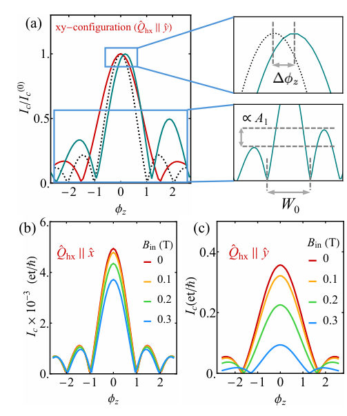
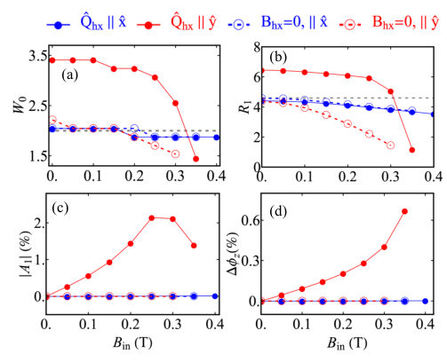
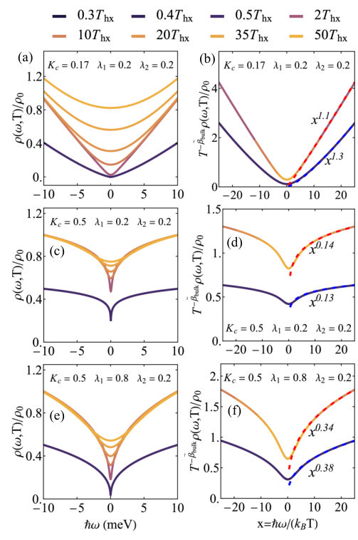
Summary. This work theoretically explores how spin helicity, mediated by itinerant carriers interacting with localized moments, establishes collective magnetic order in low-dimensional conductors. The authors predict that this helical order leaves distinct, measurable fingerprints in the Josephson current interference patterns and modifies the electronic structure of the remaining gapless carrier modes. This provides a powerful, field-tunable transport diagnostic for characterizing spin textures in correlated materials.
Why it may be interesting. The connection between collective magnetic order (helical spin texture) and measurable transport signatures (Josephson interference) in low-dimensional correlated electron systems is highly relevant to understanding exotic superconducting and magnetic phases in modern 2D materials.
Main problem. The paper investigates carrier-mediated spin helices in low-dimensional systems, focusing on how these helices manifest in Josephson interference features and how they affect carrier correlations.
Main result. The study establishes that coupled-wire carrier-localized-spin systems exhibit RKKY-driven collective helical order, which can be detected via characteristic modifications in Josephson interference patterns and reconstructed carrier-sector signatures.
Method. The analysis employs a combination of bosonization techniques, variational treatments, and theoretical modeling of anisotropic Superconductor-Normal-metal-Superconductor (SNS) Josephson junctions.
Model / system. The models include interacting one-dimensional (1D) and two-dimensional (2D) coupled-wire systems, such as those mimicking twisted bilayer WTe2. The physics is described using Luttinger liquid theory, incorporating carrier-localized spin interactions.
Key observables. Josephson interference features (central-lobe width, side-lobe asymmetry), gap reconstruction in the carrier sector, and correlation exponents ($\chi_c^n(r)$, $\chi_s^\mu{}_n(r)$).
Important parameters / regimes. Applied in-plane magnetic field, coupling strengths, and the dimensionality (1D vs. 2D) of the coupled wires.
Assumptions / limitations. The analysis relies on low-energy effective theories, bosonization, and variational approximations for gap estimation.
Figures summary. Not specified, but the text describes analyzing modifications to Josephson interference patterns and reconstructed local-density-of-states exponents.
Paper structure. The paper systematically develops the theory by first introducing the four classes of coupled 1D/2D systems, then developing the RKKY interaction and helical order, followed by analyzing the Josephson interference signatures, and finally examining the reconstructed carrier-sector observables.
Carrier-induced helical magnetism can arise in interacting one-dimensional systems coupled to localized moments. Here, we investigate the coupled-wire sliding-Luttinger-liquid counterparts with and without valley degrees of freedom, using isolated Tomonaga-Luttinger liquids as reference limits. The carrier spin susceptibility mediates a Ruderman-Kittel-Kasuya-Yosida interaction that selects the helical ordering wave vector, while interchannel correlations lock the relative helix phases and stabilize a collective quasi-two-dimensional texture. Using a variational treatment, we estimate the helix-induced partial gap and analyze the reconstruction of the remaining gapless carrier modes. To probe the spatial texture through transport, we incorporate the helix into an anisotropic superconductor-normal-metal-superconductor Josephson junction motivated by the coupled-channel structure of twisted bilayer WTe$_2$. We exploit flux focusing near the junction interfaces to make an applied in-plane field a controlled probe of the spin helix. Relative to junctions without the helix, the helical exchange field modifies the central-lobe width and relative lobe weights. In the transverse-channel geometry, it also produces field-dependent side-lobe asymmetry and central-peak displacement, which remain negligible in the matched references for the parameters considered. The reconstructed carrier sector also exhibits modified local-density-of-states exponents, spin-relaxation behavior, and competing correlations, with distinct signatures in isolated and coupled-wire systems. Our results connect collective helical order in coupled-wire systems to carrier-sector reconstruction and identify field-tunable Josephson interferometry as a complementary transport probe of the spatial spin texture.
Authors: Xiuqi Zhang, Shuvro Chowdhury, Shaila Niazi, Christian Z. Pratt, Navid Anjum Aadit, Kerem Y. Camsari
Type: theory · Category: disordered systems and neural networks · PDF: https://arxiv.org/pdf/2609.22645v1
Analysis basis: full PDF text, analyzed in chunks
Topic relevance: methods for driven-dissipative 3/5 · analog quantum simulation 2/5 · Keldysh / 2PI / non-Gaussian methods 1/5
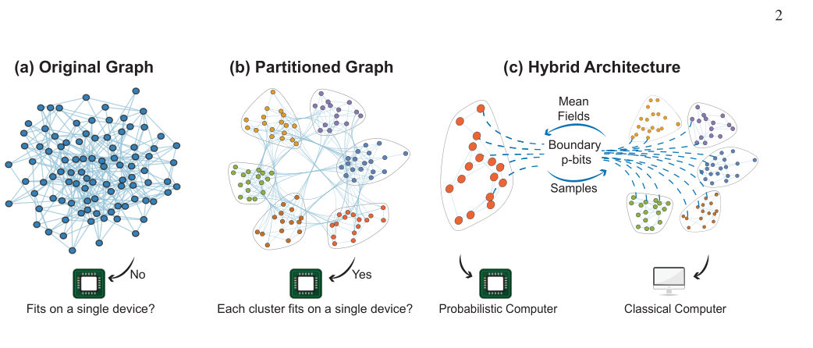
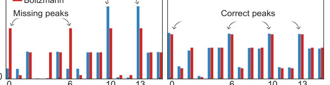
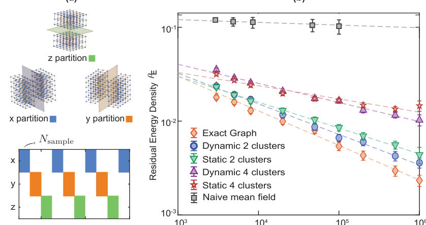
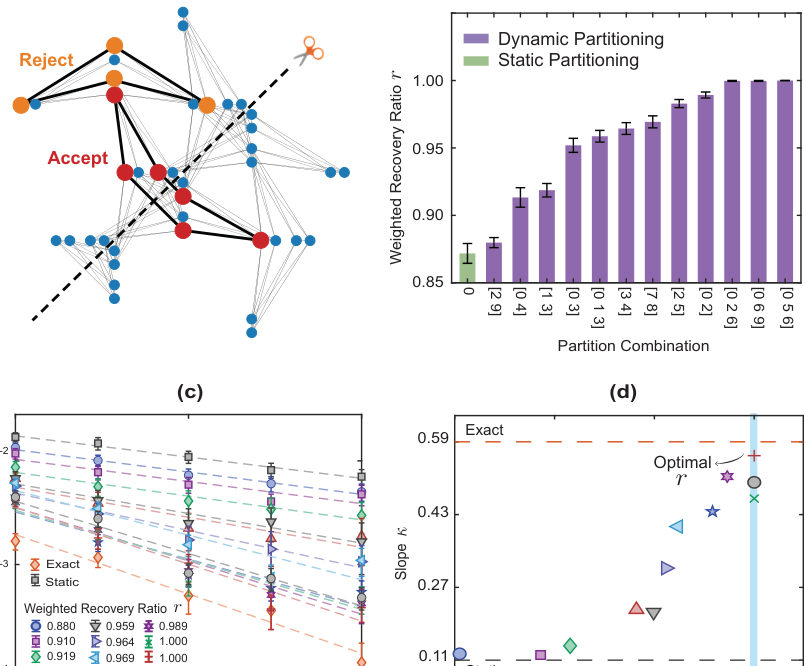
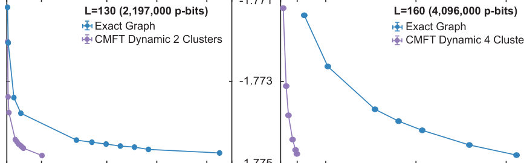
Summary. This paper introduces Cluster Mean-Field Theory (CMFT) to simulate massive Ising models that exceed available hardware capacity. By dynamically partitioning the graph and updating local clusters using effective biases, the method achieves significant computational speedups. It demonstrates that this approach provides a viable pathway for building extreme-scale Ising machines for optimization problems.
Why it may be interesting. While focused on classical optimization, the techniques for handling large, complex interactions via localized approximations (like CMFT) and the analysis of error decay are highly relevant to simulating quantum many-body systems on limited hardware.
Main problem. The primary challenge addressed is scaling Ising machine simulations to large problems by overcoming finite device capacity and communication bottlenecks.
Main result. Dynamic Cluster Mean-Field Theory (CMFT) provides a scalable route to extreme-scale Ising machines, achieving significant speedups (up to 15x) on multi-GPU setups compared to full graph simulations.
Method. The authors propose CMFT, which partitions the large interaction graph into smaller, hardware-sized clusters. They enhance this with dynamic partitioning, cycling through multiple partitions to reduce mean-field approximation errors.
Model / system. The model is an Ising system described by an energy Hamiltonian $E(\mathbf{m}) = -\sum_{i Key observables. Residual energy decay ($
ho_E$), energy density, and the weighted recovery ratio ($r$). Important parameters / regimes. The size of the graph (up to four million p-bits), the sweep budget, and the approximation error introduced by the mean-field assumption. Assumptions / limitations. The core assumption is that local updates using effective biases derived from boundary-spin averages are sufficient, and dynamic cycling helps mitigate the error from fixed mean-field approximations. Figures summary. Figures illustrate the scaling process (partitioning), compare sampling distributions (static vs. dynamic CMFT vs. Boltzmann), and show the power-law decay of residual energy ($
ho_E$) over computational effort. Paper structure. The paper introduces CMFT to handle large graphs by localizing computation. It details the dynamic partitioning scheme, analyzes its performance on spin glasses and Pegasus graphs by measuring energy decay, and concludes with a demonstration of multi-GPU scaling.
Scaling analog and digital Ising machines to larger problems requires overcoming finite device capacity and the cost of communication between devices. We present cluster mean-field theory (CMFT), a framework that partitions a large interaction graph into clusters sized to fit available hardware. Each cluster performs local updates independently, while interactions across cluster boundaries enter through periodically updated effective biases computed from boundary-spin averages. To reduce the error introduced by fixed cluster boundaries, we introduce dynamic partitioning, which cycles through multiple partitions so that interactions approximated by mean fields at one stage can act through instantaneous spins at another. On three-dimensional spin glasses and planted Pegasus instances, dynamic CMFT exhibits power-law decay of residual energy over sweep budgets. This shows that solution quality continues to improve with computational effort despite the mean-field approximation. An automated graph partitioner combined with a weighted recovery ratio provides a practical heuristic for selecting partition combinations on graphs without natural cut directions. We demonstrate CMFT on four GPUs with approximately four million p-bits, reaching comparable energy densities up to 15 times faster than a single-GPU implementation of the full graph. By coupling locally evolving clusters through programmable effective biases, CMFT provides a route to extreme-scale Ising machines on both analog and digital hardware.
Authors: Abhinav Sinha, Kai Wang
Type: theory · Category: other · PDF: https://arxiv.org/pdf/2609.24915v1
Analysis basis: full PDF text, analyzed in chunks
Topic relevance: quantum measurements 3/5 · Full counting statistics 1/5 · analog quantum simulation 1/5 · interference shaping light 1/5
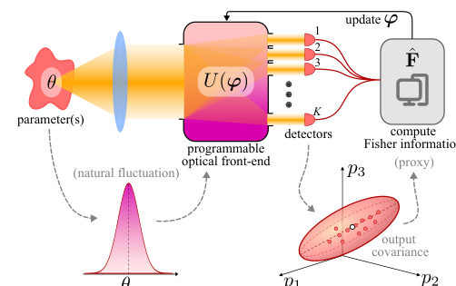
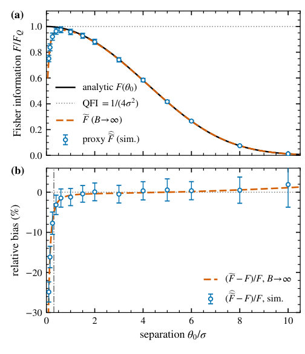
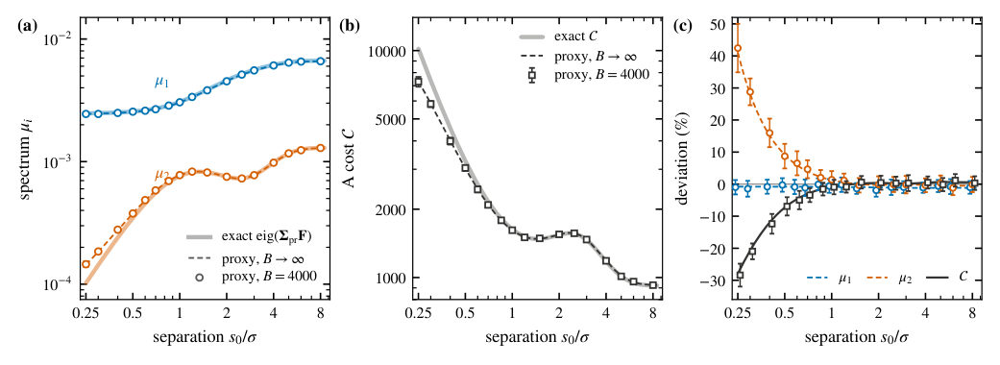
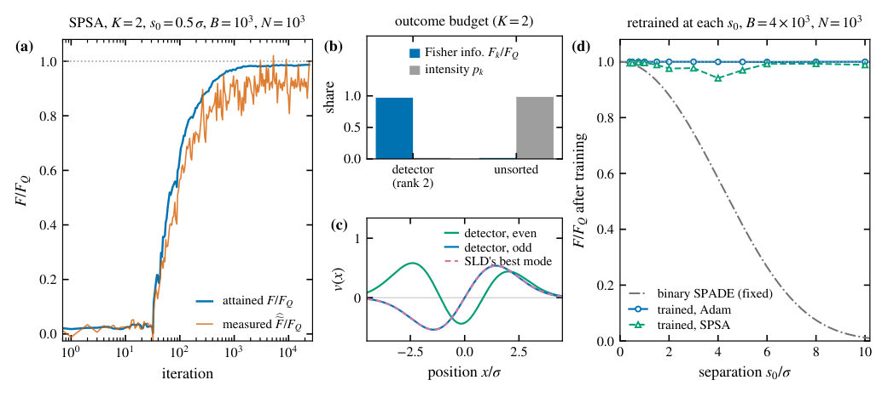
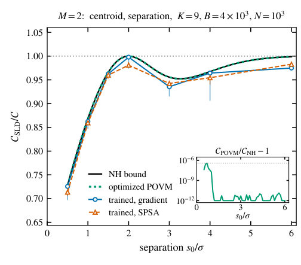
Summary. This paper presents a novel method to train optical sensing front ends adaptively by using natural parameter fluctuations instead of requiring a known instrument response model. By constructing a Fisher Information proxy from measured covariances, the authors show that the training objective can be computed directly from count statistics. This breakthrough enables robust, model-free optimization for advanced quantum optical measurements.
Why it may be interesting. This work provides a powerful, model-free framework for optimizing quantum measurements in optical systems by leveraging inherent system fluctuations, which is highly relevant for quantum optics and sensing.
Main problem. The paper addresses the challenge of training programmable optical sensing front ends adaptively, without needing a known instrument response model or controlled parameter scans.
Main result. They demonstrate that training objectives, derived from Fisher Information proxies using natural parameter fluctuations, can achieve performance comparable to model-based gradients, approaching quantum limits.
Method. The core method involves constructing a Fisher Information (FI) proxy by decomposing the measured covariance into noise and parameter-induced components, allowing for 'count-only updates'.
Model / system. The system involves programmable optical front ends, such as mode sorters, used for optical sensing of parameters encoded in an optical field. The analysis uses simulated photon counts from two incoherent point sources as a testbed.
Key observables. Fisher Information (FI) proxy (eF), parameter-induced covariance ($C_{ ext{param}}$), and the A-optimal cost ($C$).
Important parameters / regimes. The number of parameters ($M$), the separation between sources ($ heta$), and the signal-to-shot-noise ratio ($r$).
Assumptions / limitations. The method assumes a locally affine response for the parameter-induced covariance and relies on decomposing the observed covariance into noise and parameter-induced parts.
Figures summary. Figures illustrate the concept of using natural fluctuations to compute the FI proxy and compare the derived FI proxy against the Quantum Fisher Information (QFI) benchmark.
Paper structure. The paper develops the FI proxy from measured covariances, extends this to multi-parameter estimation, and finally analyzes the required photon budget and bias reduction techniques using reference batch subtraction.
Fisher-information-based optimization of programmable optical front ends in situ generally requires a response model or parameter-labeled measurements. We show that natural parameter fluctuations can instead provide the training signal. We construct proxies for the Fisher information (FI) of one parameter and the prior-weighted FI spectrum of multiple parameters from measured covariances after subtracting conditional detection noise, assuming locally affine responses. We use simulated photon counts from two incoherent point sources to train a mode sorter that approaches the quantum limit for separation and the Nagaoka--Hayashi single-copy bound for joint centroid--separation estimation. We demonstrate count-only updates that require no instrument response model and achieve performance comparable to model-based gradients. Our results provide a route to adaptive optical measurements without controlled parameter scans.
Authors: Owen Lailey, Alexandre Boutot, David G. Cory, Joseph P. Cotter, Vishal Dhamgaye, Tao Hong, Michael G. Huber, Young-June Kim, Winfried Kockelmann, Jeremy W. Paster, Dusan Sarenac, Kawal Sawhney, Naume Shentevski, Ivar Taminiau, Dmitry A. Pushin
Type: experiment · Category: other · PDF: https://arxiv.org/pdf/2609.24709v1
Analysis basis: full PDF text, analyzed in chunks
Topic relevance: interference shaping light 3/5 · quantum optics experiment 2/5 · quantum measurements 1/5
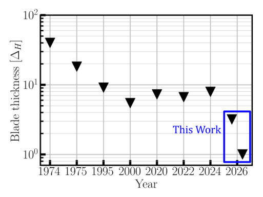
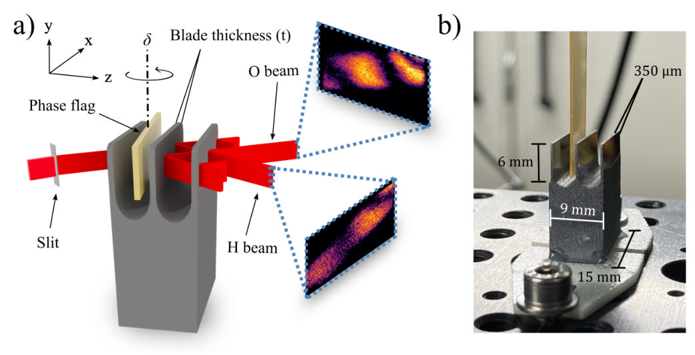
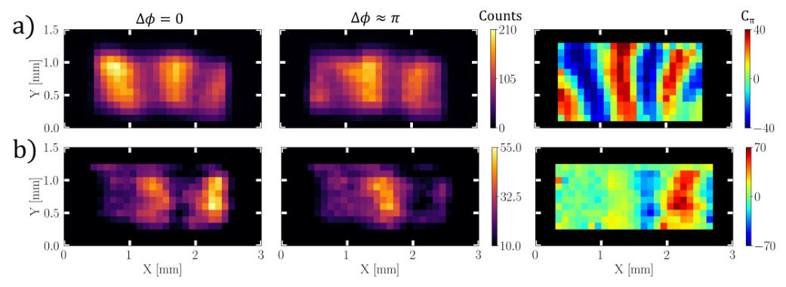
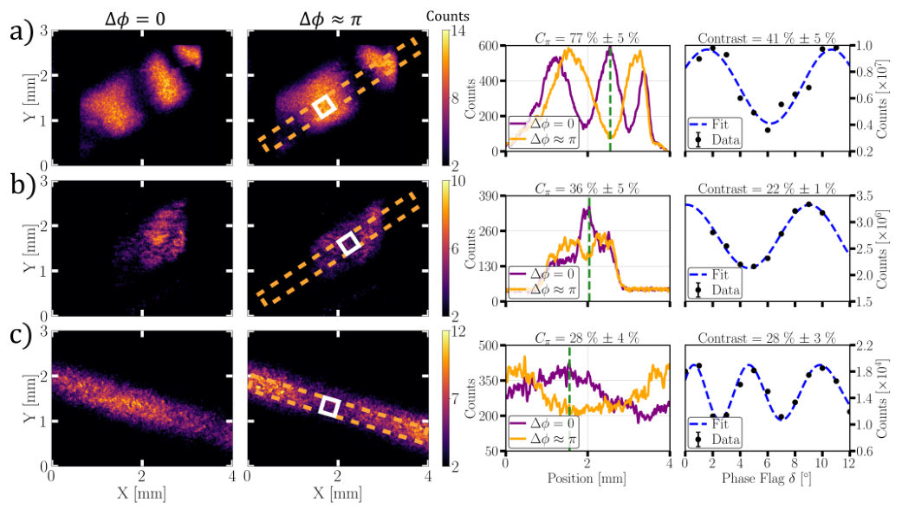
Summary. This paper reports the fabrication of record-thin neutron and X-ray perfect-crystal interferometers using advanced sub-micron techniques. By achieving thicknesses comparable to the pendellösung length, the researchers demonstrated precise control over quantum beam splitting. These devices are crucial for next-generation phase-contrast imaging and fundamental measurements like spin-orbit interactions.
Why it may be interesting. The work directly addresses the engineering of quantum-optical beam splitting using crystal thickness as a tunable parameter, which is highly relevant to advanced quantum optics and matter-wave interferometry.
Main problem. The primary challenge is fabricating multiple crystal blades with identical micrometer-scale thicknesses over centimeter-scale areas to enhance neutron and X-ray perfect-crystal interferometers (PCIs).
Main result. The authors successfully demonstrated the thinnest equal-blade-thickness LLL interferometers to date ($t = 110 \mu ext{m}$), enabling operation in the single pendellösung length regime.
Method. They utilized a non-etching sub-micron fabrication technique to create the interferometers and measured beam splitting and contrast using phase-flag rotation scans and limited-measurement approaches.
Model / system. The system involves neutron and X-ray perfect-crystal interferometers (PCIs), specifically triple-Laue interferometers, where the crystal thickness controls the beam splitting in the pendellösung regime.
Key observables. Interferometric contrast ($C$ or $C_\pi$), dynamical-diffraction beam spreading, and the ability to control beam splitting via crystal thickness.
Important parameters / regimes. Blade thicknesses ($110 \mu ext{m}, 350 \mu ext{m}$), the pendellösung length scale ($\Delta H$), and the achievable contrast values (up to $92\%$ under ideal conditions).
Assumptions / limitations. Achievable contrast is limited by crystal imperfections, strain, roughness, and environmental noise (vibration/temperature drift).
Figures summary. Figures show the evolution of the interferometers, setups using phase flags, and maps of X-ray interference fringes illustrating contrast measurements.
Paper structure. The paper progresses from establishing the need for thinner PCIs, detailing the fabrication success, demonstrating the physics in the pendellösung regime, and finally discussing the measurement techniques and limitations imposed by environmental noise.
Neutron and X-ray perfect-crystal interferometers (PCIs) are powerful platforms for studies of fundamental physics and phase-contrast imaging. Further enhancing several PCI capabilities requires reducing crystal blade thickness to the micron scale, which minimizes dynamical-diffraction image blur, permits operation in the pendellösung regime where blade thickness controls beam splitting, and reduces absorption for simultaneous neutron and X-ray operation. However, fabricating multiple crystal blades with identical micrometer-scale thicknesses over centimeter-scale areas remains a major challenge. Here, using a non-etching sub-micron fabrication technique, we demonstrate silicon triple-Laue interferometers with equal-blade-thicknesses of 110 $μ$m and 350 $μ$m, operated with both neutrons and X-rays. These devices are the thinnest PCIs realized to date, enabling a factor-of-six reduction in dynamical-diffraction beam spreading for improved phase-contrast imaging, while reaching the single pendellösung length regime in which crystal thickness provides an experimentally accessible control parameter for engineered quantum-optical beam splitting of plane-wave inputs. These results motivate multi-blade PCI designs utilizing identical half-pendellösung crystal lamellae that are proposed for neutron spin--orbit and electric dipole moment measurements.
Authors: Xiao Liang
Type: theory · Category: strongly correlated electrons · PDF: https://arxiv.org/pdf/2609.22618v1
Analysis basis: full PDF text, analyzed in chunks
Topic relevance: analog quantum simulation 3/5 · methods for driven-dissipative 2/5 · Keldysh / 2PI / non-Gaussian methods 1/5
Summary. This work uses the tensor-backflow method to probe d-wave pairing in the t-t'-U Hubbard model. By analyzing pair correlations and the pair-density matrix, the authors demonstrate that negative t' enhances d-wave fluctuations compared to t'=0. However, they conclude that while fluctuations are enhanced, the system does not exhibit true long-range superconducting order based on finite-size scaling.
Why it may be interesting. The detailed comparison between variational energy minimization (which favors stripe order) and order-sensitive observables (which probe superconductivity) provides a nuanced view of competing ground states in strongly correlated electron systems.
Main problem. The study investigates the emergence and nature of d-wave pairing correlations in the two-dimensional t-t'-U Hubbard model.
Main result. The calculations show that negative next-nearest-neighbor hopping (t' < 0) enhances d-wave pair fluctuations, though the pair-density matrix spectrum does not exhibit the scaling required for establishing long-range superconducting order (ODLRO).
Method. The authors employ the tensor-backflow wave function method, optimizing it using techniques like symmetry projections and Lanczos steps, and comparing results against Neural Quantum States.
Model / system. The system is the two-dimensional t-t'-U Hubbard model, described by a Hamiltonian including nearest-neighbor (t) and next-nearest-neighbor (t') hopping terms, and an on-site repulsion (U).
Key observables. d-wave pair correlations, pair-density matrix spectral weight, ground state energy, and spin/charge density patterns.
Important parameters / regimes. Filling $n=0.875$, on-site repulsion $U=8$, and next-nearest-neighbor hopping $t'=-0.2t$ are key regimes studied across $8 imes8$ to $16 imes16$ lattices.
Assumptions / limitations. The analysis assumes that the tensor-backflow method, when optimized with symmetry projections, provides accurate descriptions of the ground state, but notes that the lack of scaling in the pair-density matrix suggests no robust ODLRO.
Figures summary. Figures illustrate the convergence of pair correlations, energy improvements via symmetry projections, ground state stripe patterns, and the distribution of pair-density matrix eigenvalues across different lattice sizes and hopping parameters.
Paper structure. The paper systematically applies the tensor-backflow method to calculate ground state properties, focusing on improving energy estimates through symmetry constraints, analyzing real-space pair correlations to confirm d-wave structure, and finally examining the scaling of pair-density matrix eigenvalues to determine the nature of superconducting fluctuations.
Building on the recently developed tensor-backflow method, which accurately describes energies and stripe states in the Fermi-Hubbard model, we investigate $d$-wave pairing in the two-dimensional $t$-$t'$-$U$ Hubbard model. For the $8\times8$ lattice, we improve the wave function using symmetry projections followed by one Lanczos step, whereas for the $12\times 12$ and $16\times 16$ lattices, we apply one Lanczos step without symmetry projection. We focus primarily on the parameter regime with filling $n=0.875$, on-site repulsion $U=8$ and next-nearest-neighbor hopping $t'=-0.2t$, a regime in which enhanced $d$-wave pairing has been reported. The resulting energies are competitive with those obtained using state-of-the-art neural quantum states. For example, on a $16\times 16$ lattice with periodic boundary conditions, the tensor-backflow wave function after one Lanczos step without explicit symmetry enforcement achieves a relative energy difference of $4.4\times 10^{-3}$ from the symmetry-preserving neural quantum state result. From the real space pair correlations, for $t'=-0.2t$, we observe stronger $d$-wave pair correlations together with the characteristic relative sign between horizontal and vertical bond-pair components. Compared with $t'=0$, finite negative $t'$ increases the spectral weight of the corresponding pair-density matrix, which indicates the enhanced overall $d$-wave pair fluctuations. The leading eigenvalue is enhanced on the $8\times8$ lattice for both with and without symmetry projections. For larger lattices such as $12\times 12$ and $16\times 16$, the leading pair-density matrix spectral weight is distributed among several nearly degenerate eigenmodes rather than being concentrated in a single dominant mode. This indicates enhanced and more broadly distributed $d$-wave pair fluctuations, but no single eigenvalue exhibits the extensive scaling required for ODLRO.
Authors: Tak Hur
Type: theory · Category: numerical methods · PDF: https://arxiv.org/pdf/2609.23334v1
Analysis basis: full PDF text, analyzed in chunks
Topic relevance: analog quantum simulation 3/5 · methods for driven-dissipative 3/5
Summary. This paper analyzes the role of the regularization shift in Stochastic Reconfiguration (SR) for Neural Quantum States (NQS), treating it as a statistical filter rather than just a numerical fix. The authors introduce Multi-Shift SR (MS-SR), which averages multiple independent optimization steps to significantly reduce update variance and improve generalization performance on models like the TFIM.
Why it may be interesting. For AMO physicists using NQS to simulate quantum systems, this work provides a rigorous statistical framework for optimizing the variational parameters, offering a superior, lower-variance update rule (MS-SR) over standard SR.
Main problem. The paper investigates whether the diagonal shift parameter in Stochastic Reconfiguration (SR) for Neural Quantum States (NQS) acts as a mere numerical stabilizer or a genuine statistical filter for generalization in overparameterized regimes.
Main result. The authors propose Multi-Shift SR (MS-SR), which averages independent ridge solves at multiple data-adaptive shifts, demonstrating that this technique lowers validation risk and update variance compared to fixed-shift SR.
Method. The core method involves reformulating SR as a ridge regression problem and developing diagnostics (Validation Residual, Multi-batch Variance) to analyze the bias-variance trade-off introduced by the shift parameter.
Model / system. The analysis uses NQS to approximate quantum wavefunctions, tested on a $4 imes4$ Heisenberg graph and a 100-site transverse-field Ising model (TFIM).
Key observables. Validation risk, update variance ($V_{ ext{mb}}$), and the regression excess risk ($\mathbb{E}_\lambda$).
Important parameters / regimes. The regularization shift $\lambda$, the ratio of parameters to samples ($P/N_s$), and the number of independent batches ($K$).
Assumptions / limitations. The analysis assumes that the complex case can be obtained by replacing transposes with Hermitian conjugates, and the MS-SR improvement relies on averaging independent ridge solves.
Figures summary. Figures illustrate the U-shaped validation risk dependence on $\lambda$ and the monotonic decrease of variance with $\lambda$, while tables compare MS-SR against single-shift and bagged SR baselines on the TFIM.
Paper structure. The paper first establishes the statistical role of the shift parameter, then presents small-scale diagnostics on the Heisenberg graph, moves to large-scale testing on the TFIM showing the noisy-ridge behavior, and finally introduces and validates the MS-SR technique through multiple comparisons.
Stochastic reconfiguration (SR) is the standard optimizer for neural quantum states (NQS), but modern NQS often have far more parameters than Monte Carlo samples. We show that in this regime the diagonal shift is more than a numerical stabilizer. It acts as a statistical filter for finite-sample generalization. At a fixed wave function, SR is ridge regression from tangent features to the centered local energy. Its residual is the expressivity gap, the part of imaginary-time evolution outside the current tangent space. This gap is orthogonal to the tangent space in population, but finite batches make it act as noise that SR can overfit. The shift therefore balances shrinkage of useful update directions against variance from fitting sampled residuals. Exact diagnostics on a $4\times4$ Heisenberg graph separate two effects of overparameterization. Larger tangent spaces help when they reduce the expressivity gap, but they can hurt when they overfit a fixed gap. In a $100$-site transverse-field Ising family trained with a foundation NQS, validation risk is U-shaped in the shift while variance decreases, matching the noisy-ridge model. This view leads to multi-shift SR (MS-SR), which averages independent ridge solves at data-adaptive shifts to form a richer, lower-variance spectral filter. Checkpoint-local experiments show that MS-SR lowers validation risk and update variance relative to the fixed-shift SR baseline. We further compare MS-SR and SR in paired online training continuations, with independent endpoint energy evaluations and a separate update-cost benchmark.
Authors: Yue Sun, Jingyan Liu, Peng-Tong Li, Chenxu Li, Ming-Jing Zhao
Type: theory · Category: quantum information and computing · PDF: https://arxiv.org/pdf/2609.24074v1
Analysis basis: full PDF text, analyzed in chunks
Topic relevance: interference shaping light 3/5 · quantum measurements 3/5
Summary. This paper introduces the use of the trace distance to quantify wave and particle aspects in multi-path interferometers, thereby establishing quantitative complementarity relations. It derives several upper bounds for the wave-particle duality and extends this analysis to include mixedness, providing a comprehensive theoretical framework for understanding quantum duality.
Why it may be interesting. This work provides fundamental mathematical tools (trace distance quantification) to analyze the core quantum mechanical concept of wave-particle duality in an interferometer setting, which has direct implications for quantum sensing and measurement theory.
Main problem. The paper aims to develop a rigorous method to quantify wave and particle behaviors in a multi-path interferometer and establish the resulting complementarity relations.
Main result. The trace distance proves to be a suitable measure for quantifying both wave and particle features, leading to the establishment of wave-particle dualities and trialities.
Method. The authors utilize the trace distance, $T( ho, \sigma)$, as a general function $D$ to define quantitative measures for waveness ($W( ho)$) and particleness ($P( ho)$).
Model / system. The study is based on the theoretical model of a $d$-path interferometer, where quantum states $ ho$ are analyzed in the path basis $\{|i angle\}_d$.
Key observables. Waveness measure ($W_{tr}( ho)$), Particle measure ($P_{tr}( ho)$), Mixedness measures ($M( ho), M_1( ho), M_2( ho)$), and the trace distance $T( ho, \sigma)$.
Important parameters / regimes. The dimension of the interferometer ($d$), and the mixing parameter ($\epsilon$) when analyzing mixed states.
Assumptions / limitations. The analysis sometimes assumes the state $ ho$ is pure to simplify proofs, and the authors note that the trace distance is not necessarily a metric.
Figures summary. Figures illustrate the schematic of the interferometer and compare the derived upper bounds for the wave-particle duality ($W_{tr}^2 + P_{tr}^2$) against the exact value across various dimensions and mixing parameters.
Paper structure. The paper develops the general method using the trace distance, establishes the definitions for $W( ho)$ and $P( ho)$ via theorems, and then systematically derives and compares multiple upper bounds for the duality and triality relations.
The complementarity relations in an interferometer reflect an important phenomenon in quantum mechanics: wave-particle duality. Here, we develop a method to quantify both wave and particle behaviors in a multi-path interferometer. In particular, we find that the trace distance is a good candidate for wave and particle measures. As a result, some duality relations and triality ralations are established respectively. This work not only extends the application of the trace distance to the interferometer, but also opens up new perspectives on the quantification of waveness and particleness.
Authors: Mariella Minder, Andreas Siakolas, Elizabeth Pasatembou, Stylianos Mavrikos, Stephanos Yerolatsitis, Konstantinos Katzis, Kyriacos Kalli
Type: experiment · Category: quantum information and computing · PDF: https://arxiv.org/pdf/2609.24561v1
Analysis basis: full PDF text, analyzed in chunks
Topic relevance: QC/QI experiment 3/5 · quantum measurements 1/5 · quantum optics experiment 1/5
Summary. This paper details the deployment and testing of a complex, multi-layer Quantum Key Distribution network over existing metropolitan fibre. By combining a trusted-node ring with a reconfigurable subnetwork, the authors achieved high key generation rates and demonstrated resource sharing across layers. This work is significant for showing how quantum networks can be practically scaled in real-world, constrained environments.
Why it may be interesting. The work provides a concrete, large-scale demonstration of integrating quantum communication into existing classical infrastructure, which is a major engineering hurdle for quantum networking.
Main problem. Scaling quantum networks requires architectures that maintain end-to-end service reachability despite constrained physical fibre and equipment, especially in brownfield deployments.
Main result. The implemented multi-layer QKD network successfully demonstrated resource sharing and high availability (99.1%) over 73 days by integrating a trusted-node ring and a reconfigurable subnetwork.
Method. The study involved deploying and monitoring a seven-node, multi-layer QKD network over existing metropolitan fibre, using SDN control to manage key requests across multiple physical layers.
Model / system. The system is a seven-node, multi-layer QKD network built over existing metropolitan fibre, comprising a quantum layer (trusted-node ring and reconfigurable subnetwork), a Key Management Layer (KMS), and an application layer for services like Layer 1 and Layer 3 encryption.
Key observables. Secret Key Rate (SKR), Quantum Bit Error Rate (QBER), Link Availability (99.1%), and Reconfiguration Overhead (17 +/- 5 minutes).
Important parameters / regimes. 73-day monitoring period; 119.4 Gbit of secret key material generated; 133% increase in logical endpoint-pair reachability.
Assumptions / limitations. The logical reachability is subject to sufficient stored key material on each physical link and the security assumptions of the trusted nodes.
Figures summary. Figures illustrate the multi-layer architecture (physical, logical KMS, application), and time-series plots show key rate and QBER stability over the 73-day deployment period.
Paper structure. The paper details the physical deployment, the multi-layer architectural design (Quantum, KMS, Application), the spectral management techniques used for integration, and finally, long-term performance measurements and overhead characterization.
Scaling quantum networks requires architectures extending end-to-end service reachability despite constrained fibre and equipment. Critically, in brownfield deployments, the quantum network must be engineered around classical telecommunications infrastructure and the operating capabilities of quantum key distribution (QKD) technology. To address this, we demonstrate a seven-node, multilayer QKD network deployed over existing metropolitan fibre. The implementation compares spectral management techniques to accommodate inherited constraints across its layers. It combines a trusted-node ring with a three-node subnetwork interconnected through reconfigurable optical switching, extending physical connectivity and service reachability without an additional transmitter. A meshed key management layer maps endpoint requests onto trusted-relay paths and supplies Layer 1, Layer 3, and one-time-pad applications. Over 73 days, eight link configurations generated 119.4 Gbit of secret key material with 99.1% link availability. Randomised end-to-end requests revealed indirect cross-layer coupling between key consumption, stored-key state and quantum-layer reconfiguration, demonstrating resource sharing through reconfigurability, spectral multiplexing and logical key-management abstraction.
Authors: Matthieu Cassus, Rishabh Sharma, Maxime Pesche, Laurent Longchambon, Thomas Badr, Romain Dubessy, Hélène Perrin
Type: both · Category: quantum gases · PDF: https://arxiv.org/pdf/2609.24738v1
Analysis basis: full PDF text, analyzed in chunks
Topic relevance: analog quantum simulation 3/5 · Keldysh / 2PI / non-Gaussian methods 1/5 · quantum measurements 1/5
Summary. This paper characterizes the dynamics of a quantum gas in a gravity-compensated shell trap, moving beyond simple harmonic approximations. By combining advanced theoretical tools like the Floquet expansion with experimental spectroscopy, the authors map the transition of the center-of-mass oscillation from harmonic to sound-wave-like behavior. This work is crucial for understanding quantum gas behavior in complex, curved potential geometries.
Why it may be interesting. This work is highly relevant as it bridges the gap between simple harmonic oscillator models and complex many-body hydrodynamics in ultracold atomic systems, providing quantitative insights into how trapping potentials and external forces modify fundamental quantum dynamics.
Main problem. The study investigates the center of mass oscillations of a quantum gas confined in a shell-shaped trap, focusing on the transition from simple harmonic motion to more complex, sound-wave-dominated dynamics as gravity compensation increases.
Main result. The analysis successfully derives and compares theoretical predictions, including beyond-RWA corrections via Floquet expansion, with experimental measurements, showing the transition to hydrodynamic behavior when gravity is nearly canceled.
Method. The study employs both theoretical techniques, such as the Floquet expansion and deriving effective Hamiltonians, and experimental measurements involving resonant excitation spectroscopy of the center-of-mass motion.
Model / system. The system is a quantum gas (e.g., Rb atoms) trapped in a shell-shaped trap using an rf-dressed quadrupole trap. The dynamics are modeled by analyzing the center-of-mass Hamiltonian, incorporating terms beyond the Rotating Wave Approximation (RWA).
Key observables. Center-of-mass oscillation frequency ($\omega_r$), damping rate, and the potential energy profile on the resonance surface.
Important parameters / regimes. Gravity sag ($\epsilon$), excitation amplitude ($d$), and the ratio of Rabi frequency to rf frequency ($\Omega_0/\omega$).
Assumptions / limitations. The analysis relies on systematic expansions (Floquet expansion) and approximations (e.g., adiabatic approximation) to derive the effective Hamiltonian, which are the primary theoretical limitations.
Figures summary. Figures compare measured oscillation frequencies ($\omega_r$) against theoretical predictions derived from RWA and higher-order Floquet expansions, demonstrating frequency dependence on excitation amplitude and gradient.
Paper structure. The paper systematically builds the theoretical framework by first analyzing the trap potential using the Floquet expansion (beyond RWA) to derive an effective Hamiltonian. It then applies this to model the center-of-mass dynamics, comparing the resulting frequency predictions against experimental measurements across different physical regimes.
We study the center of mass oscillations of a quantum gas in a shell shaped trap in the presence of a vertical force opposed to gravity. The measured harmonic frequency at the bottom of the shell is compared with an analytical formula for the trap potential including corrections beyond the rotating wave approximation. When gravity is partially compensated, a quartic correction to the harmonic motion has to be included due to the shell curvature. As gravity is nearly canceled, the quantum gas occupies a large fraction of the lower hemisphere. Driving the center of mass induces internal excitations in the quantum gas, whose time evolution is governed by the presence of sound waves. Relaxation processes induce a strong damping of the center of mass oscillation in this limit.
Authors: Kadir Çeven, Rohit Patil, Marcos Rigol, Fabian Heidrich-Meisner
Type: theory · Category: statistical mechanics · PDF: https://arxiv.org/pdf/2609.24602v1
Analysis basis: full PDF text, analyzed in chunks
Topic relevance: scars & prethermalization 3/5 · analog quantum simulation 2/5
Summary. This paper investigates the spectral properties of quantum spin ladders to compare characteristic frequencies related to thermalization and transport. By using exact diagonalization, the authors find that the frequency governing spectral form factor behavior ($\omega_{SFF}$) aligns with expected plateaus, but transport frequencies ($\omega_{tr}$) deviate, highlighting an unresolved quantitative discrepancy in the theory of quantum thermalization.
Why it may be interesting. This work directly bridges the gap between spectral statistics (quantum chaos/RMT) and transport properties in interacting quantum systems, which is crucial for understanding how local dynamics relate to global thermalization.
Main problem. The paper aims to quantitatively compare different characteristic frequencies ($\omega_{SFF}$, $\omega_{tr}$, $\omega_{ETH}$) that characterize the spectral functions and long-time dynamics of thermalizing quantum many-body systems.
Main result. The study finds clear evidence for the expected low-frequency plateaus in the ETH spectral functions, showing that the spectral form factor frequency ($\omega_{SFF}$) matches the plateau extent, while transport frequencies ($\omega_{tr}$) are systematically larger and nonuniversal.
Method. The authors use exact diagonalization to calculate ETH spectral functions and compare them against predictions derived from Random Matrix Theory and Kubo formalism estimates for transport coefficients.
Model / system. The research focuses on spin-1/2 XXZ quantum spin ladders, analyzed in both clean and disordered regimes, governed by a Hamiltonian including spin-flip, disorder, and Ising interactions.
Key observables. ETH spectral functions, Spectral Form Factor (SFF), $\omega_{SFF}$, and transport frequencies ($\omega_{tr}$ derived from diffusion constants $D_E, D_S$).
Important parameters / regimes. System size ($L$), disorder strength ($W/J_\parallel$), and coupling ratios ($J_\perp/J_\parallel$ or $\Delta/J_\parallel$).
Assumptions / limitations. The analysis relies on the Eigenstate Thermalization Hypothesis (ETH) for describing thermalization and assumes the validity of RMT predictions in certain frequency regimes.
Figures summary. Figures illustrate the SFF $K(t)$ comparing numerical results to GOE predictions, and show the time evolution and finite-size scaling of diffusion constants ($D_E(t), D_S(t)$) for clean ladders.
Paper structure. The paper establishes the theoretical framework using ETH and RMT, applies this framework to calculate spectral functions for spin ladders, and then performs a direct quantitative comparison between the characteristic frequencies derived from spectral statistics and those derived from transport measurements.
The fact that generic isolated many-body quantum systems thermalize is understood using the eigenstate thermalization hypothesis (ETH). In recent years, there has been much interest in the behavior of the ETH spectral functions, which characterize the smooth dependence of the variance of the off-diagonal matrix elements of observables on the associated energy and frequency, and whose low-frequency part contains information about the long-time dynamics. In finite systems described by the ETH, the spectral functions are expected to exhibit plateaus below a characteristic frequency $ω^{}_{\mathrm{ETH}}$. In this regime, the statistics of the matrix elements of observables are expected to be described by random matrix theory. Related frequencies that have been studied in the literature are $ω^{}_{\mathrm{SFF}}$, which controls the onset of random-matrix behavior in the spectral form factor, and the transport frequencies $ω^{}_{\mathrm{tr}}$, which are derived from transport coefficients. However, a direct quantitative comparison of these frequencies is lacking. Using exact diagonalization, we conduct such a comparison for the spectral functions of current operators in clean and disordered quantum spin ladders with diffusive energy and spin transport. We find clear evidence for the expected low-frequency plateaus in the ETH spectral functions. For the accessible system sizes, $ω^{}_{\mathrm{SFF}}$ is consistent with the extent of the plateaus, while the transport frequencies are systematically larger and lie in the nonuniversal regime of the spectral functions. Our findings highlight the need to better understand the origin of these quantitative differences.
Authors: Diego Iacopetta, Andrea Gasparini
Type: both · Category: quantum information and computing · PDF: https://arxiv.org/pdf/2609.23016v1
Analysis basis: full PDF text, analyzed in chunks
Topic relevance: QC/QI experiment 3/5 · quantum measurements 2/5
Summary. This work introduces a method to interpret quantum machine learning models by tracking quantum information metrics like Mutual Information within a Quantum Transformer Block. The authors show that these physical observables reveal how the model processes information, proving that entanglement and structured correlation are the functional mechanisms behind successful computation. This establishes a new paradigm for intrinsic interpretability in quantum AI.
Why it may be interesting. It provides a concrete, physics-based diagnostic tool (MI tracking) for understanding the internal computational steps of quantum circuits, linking abstract quantum information theory directly to machine learning performance.
Main problem. The paper addresses the inherent opacity of deep learning models, proposing that quantum mechanics offers a structural path to build inherently interpretable quantum machine learning models.
Main result. By tracking quantum information metrics like Mutual Information (MI) and Entanglement Entropy through a Quantum Transformer Block, the authors demonstrate that these physical quantities serve as intrinsic, observable signals of the model's reasoning process.
Method. The study uses a Quantum Transformer Block (QTB) circuit and analyzes its evolution by calculating quantum information metrics (MI, Entanglement Entropy) layer-by-layer, comparing these measurements on actual quantum hardware against theoretical expectations.
Model / system. The model is a Quantum Transformer Block (QTB), a fully-coherent variational quantum circuit designed to mimic classical attention and feedforward mechanisms. The experiments are validated on superconducting quantum hardware (IBM Quantum).
Key observables. Quantum Mutual Information (MI), Entanglement Entropy, State Fidelity, and the co-evolution of MI with prediction accuracy.
Important parameters / regimes. The coherence of the circuit is crucial; the analysis distinguishes between full von Neumann MI and measurement-limited Shannon MI.
Assumptions / limitations. The primary limitation noted is that hardware measurements of MI are susceptible to noise and only capture correlations visible in the computational basis, potentially missing the full quantum information content.
Figures summary. Figures illustrate the co-evolution of accuracy and MI over training, show heatmaps of MI across circuit stages (thought tracking), and compare hardware-measured MI fingerprints against simulated ones.
Paper structure. The paper establishes the interpretability gap in AI, introduces the QTB framework, details the use of quantum information metrics for diagnostics, presents empirical evidence showing MI tracks task structure, and validates these findings on real quantum hardware.
Deep learning models are powerful but opaque. As quantum machine learning matures, the field faces a defining choice: build quantum models that are equally opaque, or exploit the mathematical structure of quantum mechanics to make them inherently interpretable. We show that the latter is possible. By tracking quantum mutual information~(MI), entanglement entropy, and state fidelity through the layers of a Quantum Transformer Block (\qtb{}), a fully-coherent variational circuit with quantum analogues of both attention and feedforward, we gain direct insight into how the model processes information: which tokens it attends to, when correlations form, and why predictions fail. On four tasks with known dependency structure we show that (i)~learned MI matrices align with ground-truth task structure (AUC$\,{=}\,0.69$ on lookup), (ii)~disabling entangling gates collapses accuracy from 100\% to 15\% while MI$\to 0$, proving entanglement is the mechanism, (iii)~accuracy and MI co-evolve during training ($ρ\,{=}\,0.92$ on lookup), and (iv)~per-sample MI predicts prediction correctness on the conditional task with ROC AUC$\,{=}\,0.84$. All results are validated on IBM Quantum hardware (ibm_kingston, Heron~r2): the circuit's reasoning process, from product state through structured entanglement, is directly observable on a superconducting processor. These proof-of-concept results, obtained on small synthetic tasks, suggest that the physics of quantum computation can provide intrinsic interpretability signals with no direct classical counterpart, motivating study of whether this advantage persists at scale.
Authors: Hanbing Liang, Fujun Liu
Type: theory · Category: statistical mechanics · PDF: https://arxiv.org/pdf/2609.22817v1
Analysis basis: abstract only; PDF text extraction failed or PDF unavailable
Topic relevance: analog quantum simulation 3/5 · Frenkel-Kontorova 1/5
Summary. This theoretical work analyzes energy transport and spin dynamics in a complex, integrable three-state quantum chain. By constructing a conserved energy current, the authors derive exact transport coefficients and show that the system effectively maps onto a known XXZ model in the strong-coupling limit. This provides a rigorous understanding of how complex microscopic interactions yield simple, well-understood low-energy physics.
Why it may be interesting. The connection between integrable lattice models, emergent spin Hamiltonians (XXZ), and the rigorous derivation of transport properties (Drude weight) is highly relevant to understanding quantum dynamics in many-body systems.
Main problem. The paper investigates the coupling dependence of ballistic energy transport and the emergent spin dynamics in an integrable three-state chain.
Main result. They rigorously prove that the full periodic effective theory perfectly replicates the exact low-energy XXZ spectrum and bulk free-energy density.
Method. The authors analytically evaluate the full variance of a globally conserved energy current, utilizing the construction of a regular R-matrix.
Model / system. The system is an integrable Hermitian three-state chain connecting a clock interaction to a highly degenerate flag limit. In the strong-coupling limit, it generates an effective spin-1/2 XXZ Hamiltonian.
Key observables. Thermal Drude weight, ballistic growth rate of the energy-correlation second moment, and the low-energy XXZ spectrum.
Important parameters / regimes. The anisotropy parameter $\Delta = -1/2$ in the effective XXZ model, and the lattice size $L \ge 4$ for periodic boundaries.
Assumptions / limitations. The analysis relies on the existence of a regular R-matrix to define a conserved energy current, and the strong-coupling limit approximation.
Paper structure. The paper proceeds by first establishing the conserved energy current via an R-matrix, then analytically calculating its variance to find transport coefficients. Subsequently, it analyzes the strong-coupling limit, deriving the effective XXZ model and proving its equivalence to the full theory.
We investigate the coupling dependence of ballistic energy transport and the emergent spin dynamics in an integrable Hermitian three-state chain that connects a clock interaction to a highly degenerate flag limit. By constructing a regular $R$-matrix to establish a globally conserved energy current, we analytically evaluate its full variance to obtain the exact, strictly positive leading high-temperature coefficient of the thermal Drude weight and the ballistic growth rate of the energy-correlation second moment. In the strong-coupling limit, the degeneracy is lifted by virtual transitions of a delocalized third-color spectator state, which generates an effective spin-$1/2$ XXZ Hamiltonian with anisotropy $Δ= -1/2$ and fundamentally selects the all-active two-color sector as the true ground state. For periodic boundaries, this virtual spectator motion introduces a positive length-changing XXZ supercharge squared that, for $L\ge4$, strictly annihilates all states within a finite, length-independent energy interval above the ground state. Consequently, we rigorously prove that the full periodic effective theory perfectly replicates the exact low-energy XXZ spectrum, including all state multiplicities, as well as its macroscopic bulk free-energy density.
← Index · ← Previous · Next →